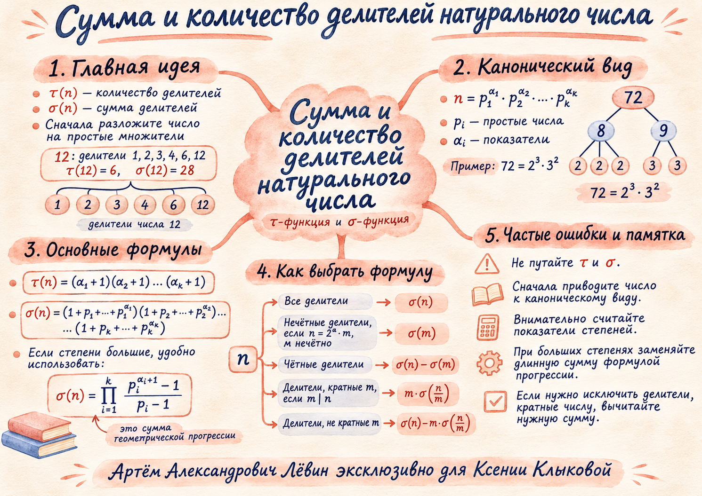

01 / Основа
Вся задача начинается с разложения
Положительный делитель числа n — число, на которое n делится без остатка. Две функции описывают одно множество делителей разными способами.
У 12 шесть положительных делителей: 1, 2, 3, 4, 6, 12.
1 + 2 + 3 + 4 + 6 + 12 = 28.
Пусть n разложено на произведение степеней различных простых чисел. У каждого простого множителя показатель делителя можно выбрать от нуля до показателя в исходном числе.
72 = 2³ · 3². Выбор показателя двойки: 0, 1, 2, 3; тройки: 0, 1, 2. Поэтому τ(72) = 4 · 3 = 12.
σ(72) = (1 + 2 + 4 + 8)(1 + 3 + 9) = 15 · 13 = 195.
Проверить все 12 делителей на модели ↗02 / Сокращение вычислений
В длинной сумме скрыта прогрессия
Последовательность 1, p, p², …, pα является геометрической прогрессией со знаменателем p. В ней α + 1 член, потому что первый показатель равен нулю.
Проверяйте число членов: 1 + 2 + 4 + 8 + 16 = 31 — это пять членов. Добавление 32 даёт шесть членов и сумму 63.
03 / Ограничение чётности
Чётные и нечётные делители
Пусть n = 2a · m, где m нечётно. Все нечётные делители числа n совпадают с делителями m: у них показатель двойки равен нулю.
| Какие делители | Сумма | Количество |
|---|---|---|
| Нечётные | σ(m) | τ(m) |
| Чётные | σ(n) − σ(m) | τ(n) − τ(m) |
Пример 72 = 2³ · 9: нечётные делители — 1, 3, 9; их сумма 13, количество 3. Чётные делители имеют сумму 195 − 13 = 182, количество 12 − 3 = 9.
Выделить только нечётные делители ↗04 / Ограничение кратности
Требуется кратность m
Если m делит n, любой делитель d числа n, кратный m, единственным способом записывается как d = m · k, где k делит n/m.
Если m не делит n, подходящих делителей нет: сумма и количество равны нулю.
180/15 = 12, σ(12) = 28, τ(12) = 6.
Сумма: 15 · 28 = 420. Количество: 6. Проверка: 15, 30, 45, 60, 90, 180.
Когда кратность запрещена
Вычтите вклад делителей, кратных m, из общего результата. При m | n:
А количество равно τ(n) − τ(n/m). Для 72 делители, не кратные 6: 1, 2, 3, 4, 8, 9. Сумма 195 − 6 · 28 = 27.
05 / Главный разбор
Кратны 12, но не кратны 5
Найдём сумму и количество положительных делителей числа 1080, которые одновременно удовлетворяют двум ограничениям.
Итог: сумма = 468, количество = 6.
Последовательная проверка: 12 + 24 + 36 + 72 + 108 + 216 = 468. Все шесть делителей кратны 12 и не кратны 5.
Удаление множителя 5 подходит именно потому, что запрет относится к простому числу 5. Для запрета кратности составному числу необходим отдельный анализ.
Посмотреть, как фильтр оставляет ровно шесть делителей ↗06 / Самостоятельная тренировка
Путь А · 10 заданий
Все упражнения взяты из чек-листа занятия. Решите каждое и раскройте ответ для самопроверки.
01. Найдите τ(18) и σ(18)
Ответ: τ(18) = 6; σ(18) = 39.
02. Сумма делителей 72
Ответ: 195.
03. Сумма делителей 540
Ответ: 1680.
04. σ(2⁸ · 3⁴) через прогрессию
Ответ: 61 831.
05. Сумма нечётных и чётных делителей 360
Ответ: нечётные — 78; чётные — 1092.
06. Сумма и количество делителей 180, кратных 6
Ответ: сумма 432; количество 8.
07. Сумма и количество делителей 540, не кратных 3
Ответ: сумма 42; количество 6.
08. Сумма и количество делителей 720, кратных 8, но не кратных 3
Ответ: сумма 144; количество 4.
09. Сумма и количество делителей 900, кратных 15, но нечётных
Ответ: сумма 360; количество 4.
10. Сумма и количество делителей 1440, кратных 12, но не кратных 5
Ответ: сумма 720; количество 8.
07 / Памятка
Вернуться к главным идеям
Полная версия с теорией, алгоритмом выбора формулы и ответами доступна в печатном чек-листе.
